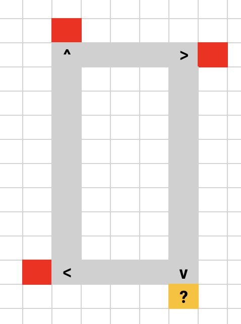

Advent of Code - Day 6 - Walking the map (JavaScript)
This task looks tricky, so I am once again choosing a simple language that I am familiar with: JavaScript (which, by the way, was developed in just 10 days).
With no further ado…
Solution to the First Part
There’s not much to explain. As expected, I just need to move the guard through the maze by increasing and decreasing rows and columns. When I hit an obstacle, I change direction. When I hit the border of the maze, I’ve solved the task. Easy peasy…
Solution to the Second Part
The second part is kind of tricky. They want us to find positions of additional obstacles that make the maze unsolvable.
Well, there’s an easy pattern behind it. You will see it if you visualize it:
An infinite loop occurs when you have four obstacles on each edge of a rectangle, like this:

So, all we need to do at every step on our path is to try to draw a rectangle. If it has three existing obstacles, we get one potential solution for an “artificial obstacle.
In case you’re wondering: I didn’t finish the second part. I know the solution approach, but seeing that I am three days behind already, I stopped working on it.
Whats up, JavaScript?
Rating: 9/12 – god ol’ frien’
Fun Fact: I was writing an algorithm to find prime numbers and found out that JavaScript is way faster than Python.
However, I really like JavaScript and often use it when I want to build small proof of concepts. It’s quick, runs everywhere (like in every browser), and is quite straightforward.
Despite the second bump in the journey to endless glory, I hope to see you again tomorrow!